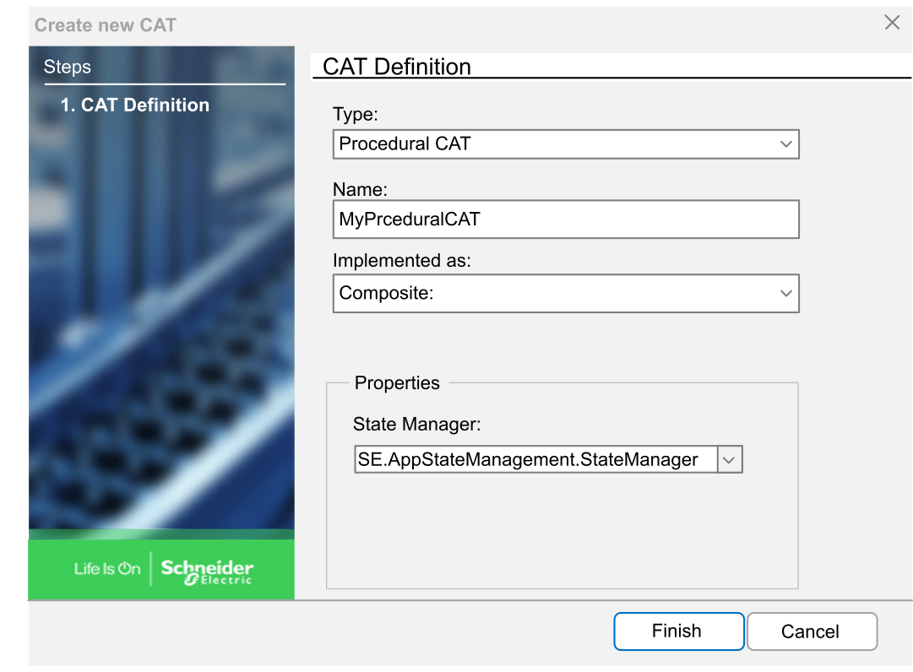
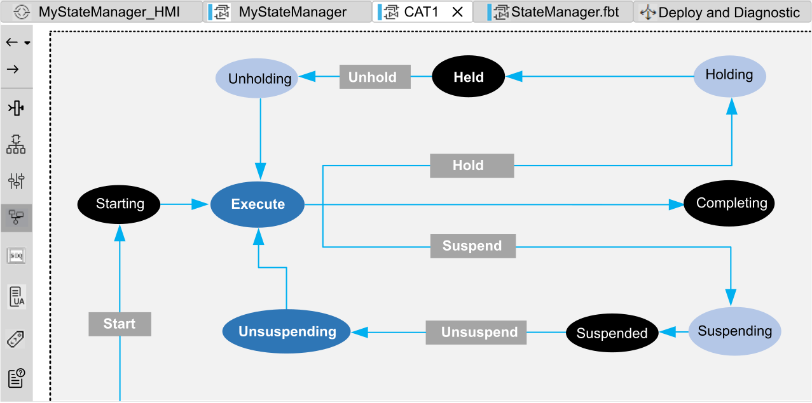
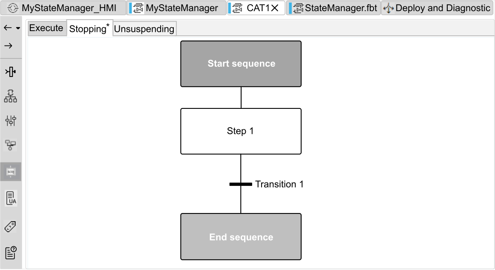

Procedural CAT Creation
Overview
A Procedural CAT is a special CAT used to manually control sequential operations.
Based on a State Manager CAT, a Procedural CAT allows to code the sequences associated to the states.
Creating a Procedural CAT
To create a Procedural CAT in your Solution:
|
Step |
Action |
|---|---|
|
1 |
In the Solution Explorer, select the folder of interest under CAT > Application. |
|
2 |
Right-click it and select New Item…. The Create new CAT window opens. |
|
3 |
 This inserts the new CAT in the folder of the Solution Explorer in alphabetical order. |
|
4 |
In the Interface pane of the CAT tab, the useful part of the State manager interface is proposed by default in the Procedural CAT interface. If needed, add or remove signals and variables as described in the Interface Editor topic.
NOTE: Socket and plugs cannot be used for transition.
|
|
5 |
In the State Graph pane of the CAT tab, you can view and edit the State Graph created in the State Managerment diagram editor. In you have selected in step 3, the graphic is as follows:  |
|
6 |
Double-click a state to edit. This opens the Sequence Diagram pane of the CAT tab in a new sub-tab. Define the sequence to associate to the state. Refer to the Sequence Diagram Editor topic for more information.  |
|
7 |
Click the Build |
 icon in the ribbon.
icon in the ribbon.